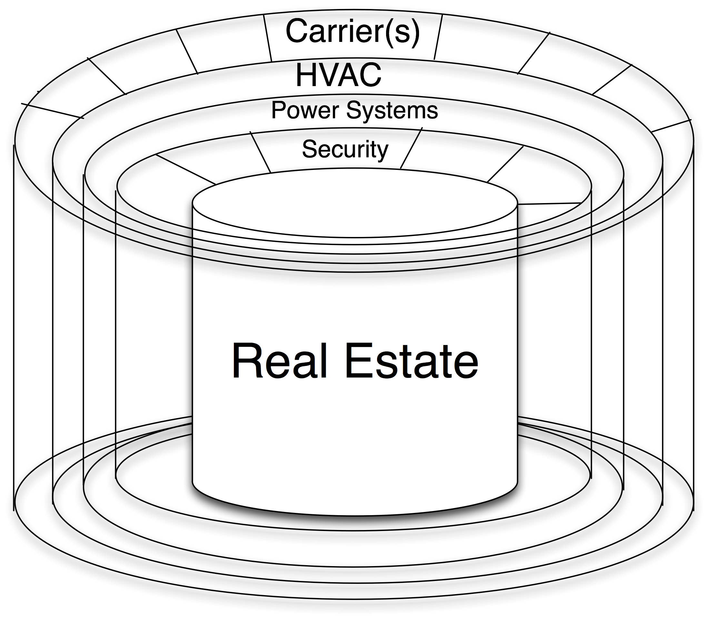
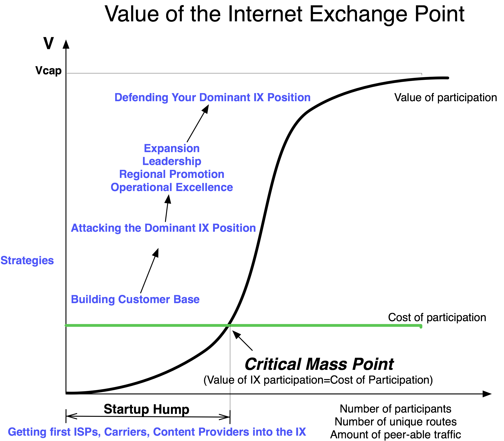

The Networked Data Center Model
Data Centers can be operated by several different types of players, including carriers, ISPs, providers of colocation services, and completely neutral entities. This section will help you understand some of the differences between them, particularly with respect to the U.S. vs. European IXP models.
Carrier Data Center
As stated before, without a network, a data center is an island. If a carrier owns the data center, we call it either a:
- Carrier Point-of-Presence (POP) or
- Carrier colocation space
The carrier ring in the model (Figure 12-13) demonstrates the ability for multiple competing carriers to offer connectivity within a building.
Definition: Carriers are layer 2 transport providers.
When we say carriers, we are referring to the folks that bring in layer 1 and layer 2 – dark fiber, lit fiber services, and circuits for the tenants to use to get bits into and out of the data center.
Most carrier data centers do not allow competitive providers to sell transport to their customers in their space. Some companies have referred to carrier data centers as “telco jails” since they can’t get their content out of the building unless the carrier data center owner sells them transport services.

Figure 12-13. The carrier ring of the data center model. Multiple carriers selling services, or just one?
The Carrier Point-of-Presence (POP)
Definition: A Carrier POP is space within a carrier data center that is operated solely for the use of the carrier itself.
A Carrier POP is a relatively small footprint in a data center. This space is a data center space with only one customer – the carrier itself.
The Carrier Hosting Facility
Definition: A Carrier Hosting Facility is space within a carrier data center that is purpose-built for the use of hosting the carrier and its customers.
Carriers may also lease data center space from others and use it for a POP or hosting space.
Carrier-Neutral Data Center
Definition: A Carrier-Neutral Data Center is a data center that is neither owned nor operated by a company that offers carrier services.
A Carrier-Neutral Data Center does not compete with its carriers for transport (circuits) and, therefore, carriers generally do not have a disincentive to build in and support this business model. The Carrier-Neutral Data Center brings in multiple carriers for the customers to choose from, creating an open market for transport services in the building.
Notes from the field.
Specific Carrier Required
Some customers insist on being in a building with multiple carriers for redundancy and resiliency reasons. Some customers have dollar volume terms with certain carriers so they can more easily build into a building that has a certain carrier present.
Notes from the field.
Denver Rivals Won’t POP Each Others Facilities
Level 3 and Qwest are both based in Denver, Colorado, and are huge rivals. To quote a high-level Qwest executive, “there is no way we will build Qwest fiber into a Level 3 Gateway [Level 3’s name for its data center], and there is no way we will allow Level 3 fiber into our Qwest CyberCenters [Qwest’s branded data centers].” Thus, the Carrier-Neutral Data Centers serve a market that insists upon carrier neutrality and diversity.
What happens when a carrier acquires a Carrier-Neutral Colocation company?
Notes from the field.
When Carrier-Neutral Colo is Acquired By Carrier
Terremark hosted a NANOG meeting in Miami shortly after its acquisition by Verizon was announced. A representative made a few statements during the opening of the meeting and during the peering track that Terremark was to continue operating as “business as usual.” He suggested that there are many new Terremark IXPs to be built out with the same business model as before.
Will this scenario work? ISPs and carriers have purchased carrier-neutral colocation facilities before, so there are some historical precedents to consider.
In 1999, AboveNet acquired the Palo Alto Internet Exchange (PAIX) of Palo Alto, California, and the community raised great concern of the form:
“The PAIX is no longer neutral.”
The rumblings continued that ISPs would move out and that AboveNet would leverage the ownership of the PAIX to its advantage. People suggested that a new neutral exchange point would arise and take over as the peering hub for the Bay Area. Others suggested that the ISPs would not expand their presence there.
However, none of these things actually happened.
The PAIX has changed hands several times since then without significant disruptions to the business. The PAIX continued to be operated as it always did, and continued to provide a quantifiable peering value to its customers.
All IXPs go through the network externality “S” curve as shown in Figure 12-14, and the PAIX in Palo Alto was already well past critical mass – the value of peering there greatly exceeded the cost of building in and operating peering infrastructure at the PAIX. The carrier neutrality “principle” was not a strong enough force to make people move out and give up that derived peering value (where peeringValue=valueDerived-costOfPeering).

Figure 12-14. The value of an Internet Exchange.
So if history is any indication, Terremark’s facility in Miami will probably continue to contain a strong ecosystem moving forward.
However, the new Terremark buildings present a different situation altogether. Even if the Terremark buildings are operated as a completely separate Verizon subsidiary, building in ultimately supports the parent company, Verizon. Since the new buildings have to go through the exact same “start-up hump” that all colocation facilities and IXPs have to go through (where the value of participation is so much lower than the cost of participation), they will have a harder time attracting the critical mass of carriers and ISPs.
The Terremark neutrality message will also no longer ring true, so all of the heavy lifting needed to attract ISPs and build the value proposition will be much more difficult. After all, might Verizon get to pitch connectivity first to the new Terremark colocation prospects? Might Verizon get to peek through the tour and visitor logs to find prospects for bandwidth? Wouldn’t competitors prefer to see Verizon resources drain as a result of an over-built and unpopulated colocation facility? These questions are examples of concerns raised when carriers compared building into ISP-owned data centers against building into an open market Carrier-Neutral Data Center.
History has a way of repeating itself.
So most likely, Terremark colocation facilities built from now on will not be perceived as carrier or ISP neutral and will fail as colocation or IXP locations. They will probably be very-well-built data centers, though. I just don’t see the success in Miami being duplicated elsewhere with this parent.